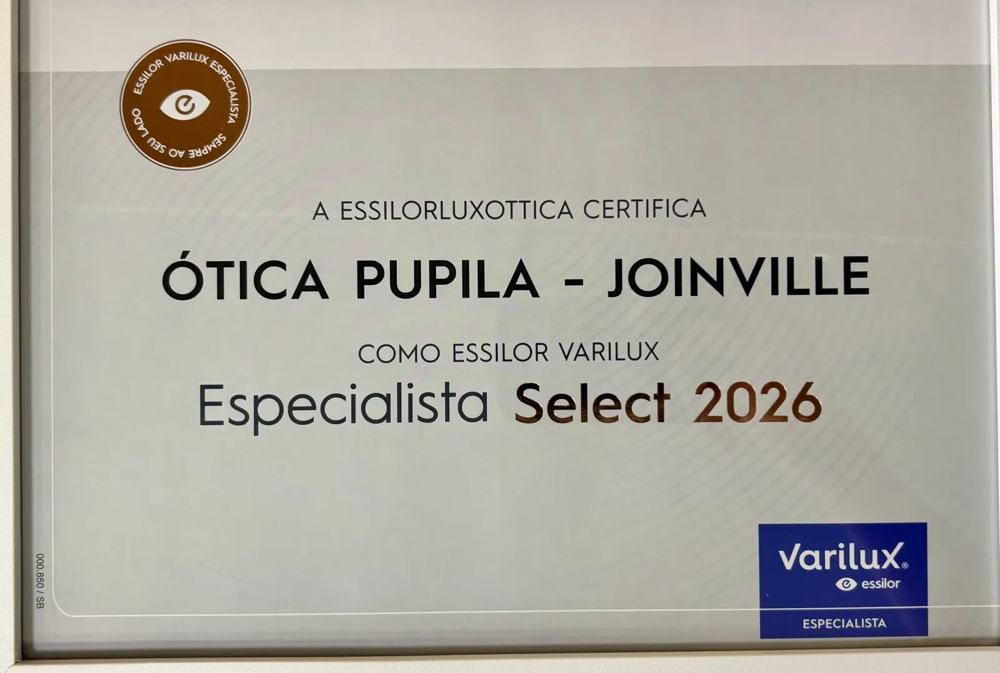

ÓTICA PUPILA · DESDE 1992
Um novo olhar.
A mesma
confiança.
O estilo é seu. O cuidado é nosso.
Óculos, relógios e semijoias para acompanhar
quem você é, em cada momento.
A gente cuida dos detalhes.

DO SEU JEITO, EM CADA DETALHE
Para ver e se reconhecer.
Escolhas que fazem parte
de quem você é.
UM RECONHECIMENTO DA ESSILORLUXOTTICA
Essilor Varilux
Especialista Select 2026.
A Ótica Pupila de Joinville recebeu a certificação Essilor Varilux Especialista Select 2026. Conheça as lentes e tecnologias Essilor com que trabalhamos.
Conheça as lentes Essilor
UM CLÁSSICO. OUTRA PERSPECTIVA.
SELEÇÃO PUPILA / 01
 NOSSA CASA, EM JOINVILLE.
NOSSA CASA, EM JOINVILLE.
TRADIÇÃO & CONFIANÇA
O tempo passa.
O cuidado fica.
Desde 1992, fazemos parte de Joinville. Na nossa loja, você encontra espaço para experimentar, tirar dúvidas e escolher com calma.
Nossa equipe escuta o que você procura e orienta sobre os detalhes de cada peça, o ajuste e as opções de lentes.
Nossa históriaO ano em que
tudo começou.
LENTES & CUIDADO
Como funciona a
escolha das lentes.
Veja o passo a passo na Pupila, da receita médica à escolha das lentes para a sua rotina.
Conheça nossas orientações-
Traga sua receita.
A equipe começa pela sua prescrição médica para saber quais lentes pode apresentar.
-
Conte como usa os óculos.
Fale sobre leitura, trabalho, direção e outras atividades que fazem parte do seu dia.
-
Compare as opções.
A equipe explica as diferenças entre as lentes compatíveis e informa valores e prazos para você escolher.
EXPERIÊNCIAS DE CLIENTES
Conheça as avaliações
da nossa loja.
Avaliações no Google
Quero agradecer imensamente pelo atendimento maravilhoso na ótica. A equipe foi super atenciosa, esclareceu todas as minhas dúvidas e me ajudou a escolher a armação perfeita. Recomendo de olhos fechados, sem trocadilho!
Eu amo essa Ótica, saio de Curitiba pra fazer meus óculos nela, super bem atendida, atendimento nota mil, sem forçar compra, deixando super a vontade na escolha [...]
BOM SABER
Um pouco mais
de clareza.
Respostas simples para cuidar
dos seus óculos e do seu olhar.
Como limpar as lentes dos meus óculos?
Enxágue para retirar partículas, use um produto indicado para suas lentes ou uma pequena quantidade de detergente neutro, enxágue e seque com uma microfibra limpa. Evite água quente e siga as orientações do fabricante.
Posso limpar os óculos na roupa?
Evite. O tecido e a poeira podem riscar as lentes. Prefira uma microfibra própria e limpa, retirando a sujeira antes de esfregar.
Lentes escuras garantem proteção UV?
A cor, sozinha, não comprova proteção. Ao escolher os óculos solares, verifique a indicação de proteção UVA e UVB do fabricante, como 100% UV ou UV400.
Como guardar meus óculos?
Use um estojo adequado e evite apoiar as lentes diretamente nas superfícies. Não deixe os óculos expostos ao calor intenso, como no painel de um carro.
Como escolher lentes e armações?
Leve sua prescrição e conte à equipe como usa os óculos no dia a dia. A escolha deve considerar as orientações do profissional que acompanha sua visão, o ajuste e o conforto da armação.
PERTINHO DE VOCÊ
Seu novo olhar
começa aqui.
Rua Abdon Batista, 59
Centro · Joinville/SC
- Segunda a sexta
- 08h30 às 18h
- Sábado
- 08h30 às 12h30
- Domingo
- Fechado